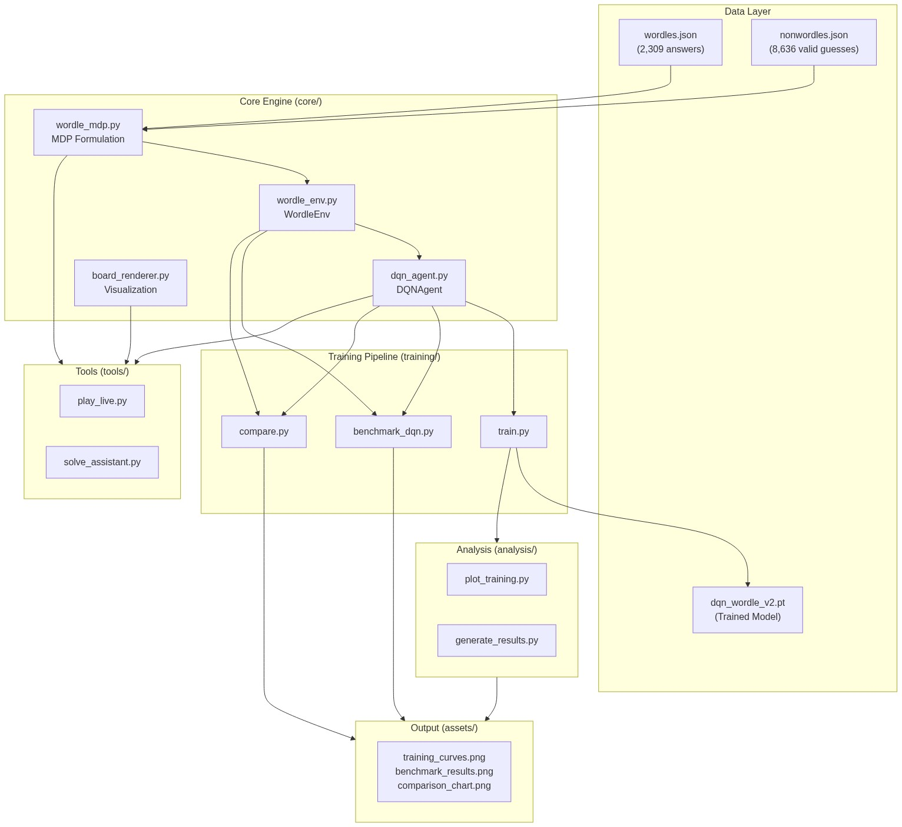
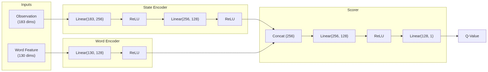
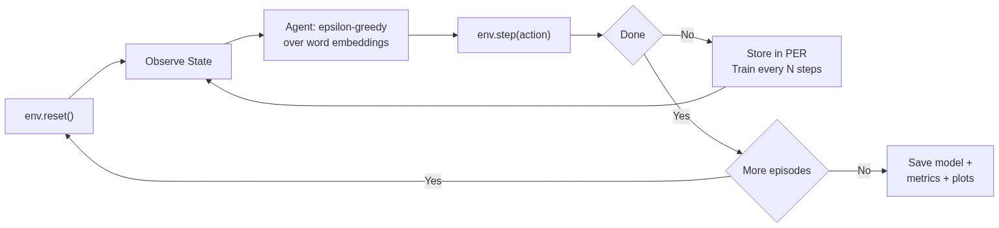
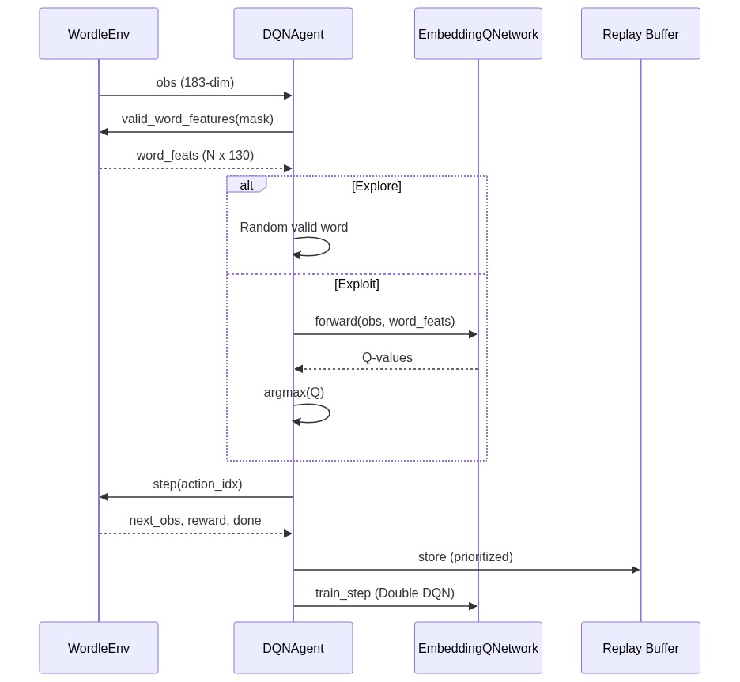

System Architecture
How the embedding-based DQN agent and entropy heuristic solve Wordle.
🎲 The Wordle MDP
Wordle is formulated as a Markov Decision Process with the following components:
Yellow letters: 26 dims
Gray letters: 26 dims
Remaining guesses: 1 dim (normalized)
+info gain bonus for reducing candidates
+progressive solve bonus for winning
🗂 High-Level System Architecture
The project is organized into core components, training pipeline, analysis tools, and interactive demos.

🧠 Neural Network Architecture (EmbeddingQNetwork)
Unlike traditional DQN which outputs a Q-value for each fixed word index, the v2 agent uses word embeddings to score any candidate word.

# EmbeddingQNetwork Architecture State Encoder: 183 → 256 → ReLU → 128 → ReLU # observation → state embedding Word Encoder: 130 → 128 → ReLU # word one-hot → word embedding Scorer: 256 → 128 → ReLU → 1 # concat(state, word) → Q-value # Why this matters: # The agent learns WHAT MAKES A GOOD GUESS (letter patterns, positional info) # rather than memorizing which word index to pick. # This lets it generalize to words never seen during training.
🔄 RL Training Loop
The agent trains using Double DQN with Prioritized Experience Replay, processing 20,000 episodes with curriculum learning.

Double DQN
Uses a separate target network to reduce Q-value overestimation. The online network selects actions while the target network evaluates them.
Prioritized Experience Replay
Samples transitions with high TD-error more frequently, improving sample efficiency. Importance sampling weights correct for the sampling bias.
Curriculum Learning
Starts training on 200 words and progressively expands to 8,636 words. This helps the agent learn basic strategies before tackling the full dictionary.
🎯 Agent Decision Pipeline
How the agent chooses a word at each step during gameplay.

# Agent decision flow at each turn: 1. Observe state (183-dim feature vector from environment) 2. Get valid action mask (which words are still allowed) 3. Compute word features for all valid words (N × 130) if random() < epsilon: # Explore action = random valid word else: # Exploit Q_values = network.forward(state, word_features) # N Q-values action = argmax(Q_values) 4. Execute action in environment → next_state, reward, done 5. Store transition in Prioritized Replay Buffer 6. Train every N steps using Double DQN loss
📐 Entropy-Greedy Heuristic
The baseline solver uses information theory to pick the most informative guess at each step. This is the same approach used by 3Blue1Brown's famous Wordle solver.
# The entropy heuristic at each turn: for each possible guess g in word_pool: # Count how many candidates produce each feedback pattern pattern_counts = Counter(score_guess(g, ans) for ans in candidates) # Calculate Shannon entropy of the pattern distribution entropy = -Σ (p · log₂(p)) where p = count/total # Higher entropy = guess splits candidates more evenly = more info gained return argmax(entropy) # best_guess = max information gain # Why it works: # RAISE has 5.88 bits of information as an opener # This means it divides 2,309 candidates into ~60 roughly equal groups # Each subsequent guess further narrows the field exponentially
💡 Key Insights
Why DQN ≠ Perfect
The entropy heuristic is near-optimal (100% win rate) because it directly computes information gain. DQN learns an approximate policy through trial-and-error, trading some optimality for the ability to generalize to unseen words.
Generalization is the Win
The embedding architecture lets DQN v2 evaluate any word — even ones not in its training pool. This is the key research contribution: an RL agent that learns what makes a good Wordle guess rather than memorizing specific words.
Curriculum ≫ Brute Force
Training on all 8,636 words from scratch is too hard for the agent. Curriculum learning (200→400→...→8,636) lets it build competence incrementally, achieving 70%+ win rate on the full dictionary.